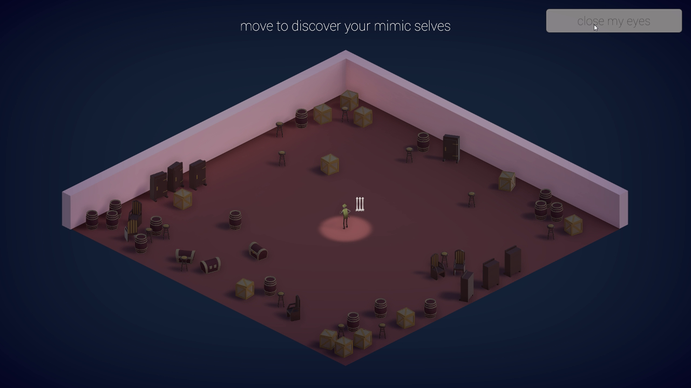

FRAG (Unity C#)
INTERNSHIP — 2018
ROLE — Game designer, gameplay programmer
TEAM — 12 people
TIME — 3 months of internship
TEAM — 12 people
TIME — 3 months of internship
A mobile multiplayer hero FPS I worked on during my 2018 internship, at the beginning of soft launch.

MUE (Unity C#)
Student project — 2018
ROLE — Lead game designer, technical designer
TEAM — 6 people
TIME — 8 months
TEAM — 6 people
TIME — 8 months
A 5-min pre-production demo for a adventure game, about a crab looking for its lost parent in a world without up or down. This was our 3rd year school project.
Burn Peasants! (Unity C#)
Student project — Work in progress — 2018
ROLE — Gameplay programmer
TEAM — 5 people
TIME — 5 months
TEAM — 5 people
TIME — 5 months
A prototype for a game project in which you play as a dragon and defend your eggs against human attacks, until you grow old and incarnate your kin.
This is our 4th year's project for the first semester, to be published on Steam in February.

BAYOU (GameMaker Studio GML)
Student project — 2017
ROLE — Lead game designer, AI designer & programmer
TEAM — 8 people
TIME — 6 months
TEAM — 8 people
TIME — 6 months
A 30-min vertical slice for a Zelda-like game, our 2nd year school project.
Stuck at the edge of the Voodoo underworld, a peat merchant exchanges parts of his soul against divine powers in a desperate attempt to escape and go home...
The Pied Piper of Hamelin (UE4 C++)
Prototype — Work in progress — 2018
ROLE — Game designer, gameplay programmer
TEAM — 2 people
TEAM — 2 people
A prototype on UE4 to practice my C++ skills, focusing on the player controller and camera behaviour, as well as data transmission. My friend works on the rats' AI.
You control the Pied Piper of Hamelin, and give musical orders to enchanted rats. They do your bidding, but will attack you if you fall out of rhythm!
CARE (Unity C#)
Prototype — 2018
ROLE — Game designer, gameplay programmer
TEAM — 3 people
TIME — 4 months
TEAM — 3 people
TIME — 4 months
A prototype for a local coop action game for two players, about taking care of each other in an asymmetric way. Our goal was to move the players solely through gameplay.
allthatweheldback (Unity C#)
Game Jam — 2018
A short, personal experience about telling them what you feel before it's too late.

WITCHSAVER (Unity C#)
Game Jam — 2018
A Warioware-like Ludum Dare game made in 24 hours, only playable inside your screensaver!

then the table laughed (Unity C#)
Game Jam — 2017A local multiplayer game for 2 to 12 players about a dude trying to survive in a room full of mimics!
The game ranked 15th overall at the Ludum Dare #40 - 10th in fun, 6th in innovation!